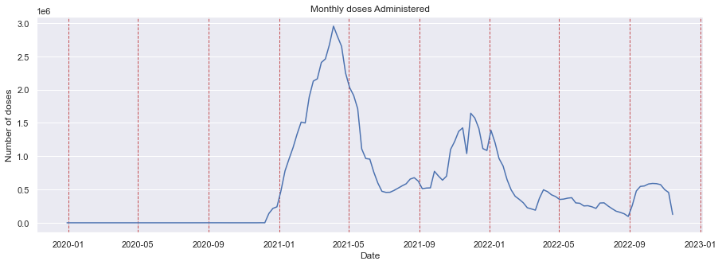
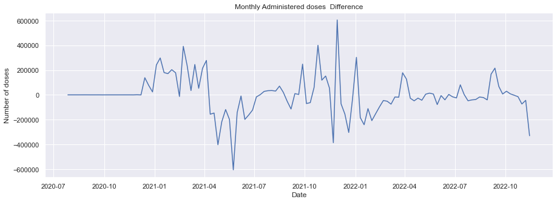
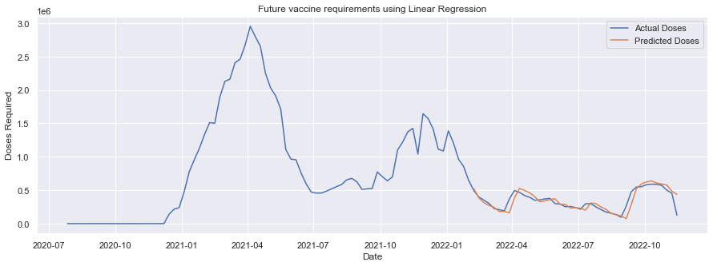

#Importing nececcary libraries
import numpy as np
import pandas as pd
from pandas.plotting import scatter_matrix
from sklearn.linear_model import LinearRegression
from sklearn.preprocessing import MinMaxScaler
from sklearn.metrics import mean_absolute_error,mean_squared_error,r2_score
from sklearn.model_selection import train_test_split
from sklearn.model_selection import KFold
from sklearn.model_selection import cross_val_score
import matplotlib.pyplot as plt
import seaborn as sns
sns.set(color_codes=True)
# filter warnings
import warnings
warnings.filterwarnings('ignore')
Group 2 - Final Project - November 26th, 2022
Group 2 - Final Project - November 26th, 2022

Approach: Machine Learning Supervised Linear Regression
STEP 1: Import Libraries
WORKFLOW: DATA SET
STEP 2: Data description and Load the Data
Dataset was retrieved from https://data.chhs.ca.gov/dataset/vaccine-progress-dashboard
#Dataset location
covid_vaccines = 'covid19vaccineCleaned.csv'#Using Pandas DataFrame to load the data
df = pd.read_csv(covid_vaccines)#Display the first five rows in the dataset
df.head()| county | administered_date | total_doses | cumulative_total_doses | pfizer_doses | cumulative_pfizer_doses | moderna_doses | cumulative_moderna_doses | jj_doses | cumulative_jj_doses | ... | fully_vaccinated | cumulative_fully_vaccinated | at_least_one_dose | cumulative_at_least_one_dose | booster_recip_count | bivalent_booster_recip_count | cumulative_booster_recip_count | cumulative_bivalent_booster_recip_count | booster_eligible_population | bivalent_booster_eligible_population | |
|---|---|---|---|---|---|---|---|---|---|---|---|---|---|---|---|---|---|---|---|---|---|
| 0 | Alameda | 1/5/20 | 0 | 0 | 0 | 0 | 0 | 0 | 0 | 0 | ... | 0 | 0 | 0 | 0 | 0 | 0 | 0 | 0 | 1396064 | 1396064 |
| 1 | Alameda | 7/27/20 | 0 | 0 | 0 | 0 | 0 | 0 | 0 | 0 | ... | 0 | 0 | 0 | 0 | 0 | 0 | 0 | 0 | 1396064 | 1396064 |
| 2 | Alameda | 7/30/20 | 0 | 2 | 0 | 0 | 0 | 2 | 0 | 0 | ... | 0 | 0 | 0 | 2 | 0 | 0 | 0 | 0 | 1396064 | 1396064 |
| 3 | Alameda | 7/31/20 | 0 | 2 | 0 | 0 | 0 | 2 | 0 | 0 | ... | 0 | 0 | 0 | 2 | 0 | 0 | 0 | 0 | 1396064 | 1396064 |
| 4 | Alameda | 8/1/20 | 0 | 2 | 0 | 0 | 0 | 2 | 0 | 0 | ... | 0 | 0 | 0 | 2 | 0 | 0 | 0 | 0 | 1396064 | 1396064 |
5 rows × 22 columns
WORKFLOW: Clean and Preprocess the Dataset
STEP 3: Clean the data
df.info()<class 'pandas.core.frame.DataFrame'>
RangeIndex: 49737 entries, 0 to 49736
Data columns (total 22 columns):
# Column Non-Null Count Dtype
--- ------ -------------- -----
0 county 49737 non-null object
1 administered_date 49737 non-null object
2 total_doses 49737 non-null int64
3 cumulative_total_doses 49737 non-null int64
4 pfizer_doses 49737 non-null int64
5 cumulative_pfizer_doses 49737 non-null int64
6 moderna_doses 49737 non-null int64
7 cumulative_moderna_doses 49737 non-null int64
8 jj_doses 49737 non-null int64
9 cumulative_jj_doses 49737 non-null int64
10 partially_vaccinated 49737 non-null int64
11 total_partially_vaccinated 49737 non-null int64
12 fully_vaccinated 49737 non-null int64
13 cumulative_fully_vaccinated 49737 non-null int64
14 at_least_one_dose 49737 non-null int64
15 cumulative_at_least_one_dose 49737 non-null int64
16 booster_recip_count 49737 non-null int64
17 bivalent_booster_recip_count 49737 non-null int64
18 cumulative_booster_recip_count 49737 non-null int64
19 cumulative_bivalent_booster_recip_count 49737 non-null int64
20 booster_eligible_population 49737 non-null int64
21 bivalent_booster_eligible_population 49737 non-null int64
dtypes: int64(20), object(2)
memory usage: 8.3+ MB#Checking for missing values
df.isnull().sum()county 0
administered_date 0
total_doses 0
cumulative_total_doses 0
pfizer_doses 0
cumulative_pfizer_doses 0
moderna_doses 0
cumulative_moderna_doses 0
jj_doses 0
cumulative_jj_doses 0
partially_vaccinated 0
total_partially_vaccinated 0
fully_vaccinated 0
cumulative_fully_vaccinated 0
at_least_one_dose 0
cumulative_at_least_one_dose 0
booster_recip_count 0
bivalent_booster_recip_count 0
cumulative_booster_recip_count 0
cumulative_bivalent_booster_recip_count 0
booster_eligible_population 0
bivalent_booster_eligible_population 0
dtype: int64STEP 4: Data Preparation and Visualization
df1=df[['administered_date','total_doses']]
df1.head()| administered_date | total_doses | |
|---|---|---|
| 0 | 1/5/20 | 0 |
| 1 | 7/27/20 | 0 |
| 2 | 7/30/20 | 0 |
| 3 | 7/31/20 | 0 |
| 4 | 8/1/20 | 0 |
# converting date from datatype to datatime datatype
df1['administered_date'] = pd.to_datetime(df1['administered_date'])
print(df1.info())
df1.head()<class 'pandas.core.frame.DataFrame'>
RangeIndex: 49737 entries, 0 to 49736
Data columns (total 2 columns):
# Column Non-Null Count Dtype
--- ------ -------------- -----
0 administered_date 49737 non-null datetime64[ns]
1 total_doses 49737 non-null int64
dtypes: datetime64[ns](1), int64(1)
memory usage: 777.3 KB
None| administered_date | total_doses | |
|---|---|---|
| 0 | 2020-01-05 | 0 |
| 1 | 2020-07-27 | 0 |
| 2 | 2020-07-30 | 0 |
| 3 | 2020-07-31 | 0 |
| 4 | 2020-08-01 | 0 |
df1.describe()| total_doses | |
|---|---|
| count | 49737.000000 |
| mean | 1705.813961 |
| std | 5877.405980 |
| min | 0.000000 |
| 25% | 9.000000 |
| 50% | 156.000000 |
| 75% | 1047.000000 |
| max | 140186.000000 |
#convert to the weekly period and then sum the numbers in the period
df1['administered_date'] = df1['administered_date'].dt.to_period("W")
monthly_vac = df1.groupby('administered_date').sum().reset_index()
print(monthly_vac) administered_date total_doses
0 2019-12-30/2020-01-05 1
1 2020-07-27/2020-08-02 60
2 2020-08-03/2020-08-09 102
3 2020-08-10/2020-08-16 171
4 2020-08-17/2020-08-23 227
.. ... ...
117 2022-10-17/2022-10-23 587833
118 2022-10-24/2022-10-30 573149
119 2022-10-31/2022-11-06 499365
120 2022-11-07/2022-11-13 455067
121 2022-11-14/2022-11-20 124851
[122 rows x 2 columns]monthly_vac['administered_date'] = monthly_vac['administered_date'].dt.to_timestamp()Step 4.1 Visualize actual doses administered vs periods of elevated cases and deaths
plt.figure(figsize=(15,5))
plt.plot(monthly_vac['administered_date'],monthly_vac['total_doses'])
plt.xlabel('Date')
plt.ylabel('Number of doses')
plt.title('Monthly doses Administered')
plt.grid(color='r', axis = 'x', linestyle='--', linewidth=1)
plt.show()

# create a clolumn with the differences on the monthly vaccines
# to make this data stationary, increase or decrease in doses
monthly_vac['doses_diff'] = monthly_vac['total_doses'].diff()
# drop the months where data is not available
monthly_vac = monthly_vac.dropna()
print(monthly_vac) administered_date total_doses doses_diff
1 2020-07-27 60 59.0
2 2020-08-03 102 42.0
3 2020-08-10 171 69.0
4 2020-08-17 227 56.0
5 2020-08-24 337 110.0
.. ... ... ...
117 2022-10-17 587833 -3115.0
118 2022-10-24 573149 -14684.0
119 2022-10-31 499365 -73784.0
120 2022-11-07 455067 -44298.0
121 2022-11-14 124851 -330216.0
[121 rows x 3 columns]STEP 4.2 Calulate the sales difference (stationarize time series)
plt.figure(figsize=(15,5))
plt.plot(monthly_vac['administered_date'],monthly_vac['doses_diff'])
plt.xlabel('Date')
plt.ylabel('Number of doses')
plt.title('Weekly Administered doses Difference')
plt.show()
# dropping off sales and date to deal just with stacionary data
df2 = monthly_vac.drop(['administered_date','total_doses'],axis=1)
print(df2.head())
print(df2.shape) doses_diff
1 59.0
2 42.0
3 69.0
4 56.0
5 110.0
(121, 1)STEP 4.3 Create the variables for week lag 1, lag 2, lag 3 and lag 4
# Preparing the supervised data
for i in range(1,5):
col_name = 'week_' + str(i)
df2[col_name] = df2['doses_diff'].shift(i)
print(df2.head())
df2 = df2.dropna().reset_index(drop=True)
df2.head(29) doses_diff week_1 week_2 week_3 week_4
1 59.0 NaN NaN NaN NaN
2 42.0 59.0 NaN NaN NaN
3 69.0 42.0 59.0 NaN NaN
4 56.0 69.0 42.0 59.0 NaN
5 110.0 56.0 69.0 42.0 59.0| doses_diff | week_1 | week_2 | week_3 | week_4 | |
|---|---|---|---|---|---|
| 0 | 110.0 | 56.0 | 69.0 | 42.0 | 59.0 |
| 1 | 143.0 | 110.0 | 56.0 | 69.0 | 42.0 |
| 2 | -42.0 | 143.0 | 110.0 | 56.0 | 69.0 |
| 3 | -12.0 | -42.0 | 143.0 | 110.0 | 56.0 |
| 4 | 37.0 | -12.0 | -42.0 | 143.0 | 110.0 |
| 5 | -170.0 | 37.0 | -12.0 | -42.0 | 143.0 |
| 6 | -63.0 | -170.0 | 37.0 | -12.0 | -42.0 |
| 7 | -22.0 | -63.0 | -170.0 | 37.0 | -12.0 |
| 8 | -34.0 | -22.0 | -63.0 | -170.0 | 37.0 |
| 9 | -10.0 | -34.0 | -22.0 | -63.0 | -170.0 |
| 10 | 12.0 | -10.0 | -34.0 | -22.0 | -63.0 |
| 11 | 47.0 | 12.0 | -10.0 | -34.0 | -22.0 |
| 12 | 32.0 | 47.0 | 12.0 | -10.0 | -34.0 |
| 13 | -105.0 | 32.0 | 47.0 | 12.0 | -10.0 |
| 14 | 821.0 | -105.0 | 32.0 | 47.0 | 12.0 |
| 15 | -338.0 | 821.0 | -105.0 | 32.0 | 47.0 |
| 16 | 138545.0 | -338.0 | 821.0 | -105.0 | 32.0 |
| 17 | 76841.0 | 138545.0 | -338.0 | 821.0 | -105.0 |
| 18 | 23809.0 | 76841.0 | 138545.0 | -338.0 | 821.0 |
| 19 | 241241.0 | 23809.0 | 76841.0 | 138545.0 | -338.0 |
| 20 | 297952.0 | 241241.0 | 23809.0 | 76841.0 | 138545.0 |
| 21 | 180221.0 | 297952.0 | 241241.0 | 23809.0 | 76841.0 |
| 22 | 171405.0 | 180221.0 | 297952.0 | 241241.0 | 23809.0 |
| 23 | 203478.0 | 171405.0 | 180221.0 | 297952.0 | 241241.0 |
| 24 | 178309.0 | 203478.0 | 171405.0 | 180221.0 | 297952.0 |
| 25 | -13102.0 | 178309.0 | 203478.0 | 171405.0 | 180221.0 |
| 26 | 392080.0 | -13102.0 | 178309.0 | 203478.0 | 171405.0 |
| 27 | 236586.0 | 392080.0 | -13102.0 | 178309.0 | 203478.0 |
| 28 | 34817.0 | 236586.0 | 392080.0 | -13102.0 | 178309.0 |
df2.shape(117, 5)STEP 5: Split the data in training and test
# split the data between train and test data
df2_train = df2.iloc[:-41]
#print(df2_train.head())
df2_test = df2.iloc[-41:]
#print(df2_test.head())
print("Train data Shape", df2_train.shape)
print("Test data Shape", df2_test.shape)Train data Shape (76, 5)
Test data Shape (41, 5)STEP 5.1 Transform the data in smaller scale
#scale the values between -1 and 1
scaler =MinMaxScaler(feature_range=(-1,1))
scaler.fit(df2_train)
df2_train = scaler.transform(df2_train)
df2_test = scaler.transform(df2_test)STEP 5.2 Get the X and Y variables fot training and test data
X_train, Y_train = df2_train[:,1:], df2_train[:,0:1]
X_test, Y_test = df2_test[:,1:], df2_test[:,0:1]
Y_train = Y_train.ravel()
Y_test = Y_test.ravel()
print('X_train Shape', X_train.shape)
print('Y_train Shape', Y_train.shape)
print('X_test Shape', X_test.shape)
print('Y_test Shape', Y_test.shape)X_train Shape (76, 4)
Y_train Shape (76,)
X_test Shape (41, 4)
Y_test Shape (41,)# Make a prediction data frame to merge the predicted
doses_dates = monthly_vac['administered_date'][-41:].reset_index(drop=True)predict_df = pd.DataFrame(doses_dates)
predict_df.head()| administered_date | |
|---|---|
| 0 | 2022-02-07 |
| 1 | 2022-02-14 |
| 2 | 2022-02-21 |
| 3 | 2022-02-28 |
| 4 | 2022-03-07 |
act_doses = monthly_vac['total_doses'][-42:].to_list()
print(act_doses)[646017, 494228, 397874, 352295, 300866, 225824, 208574, 189722, 368029, 495224, 468160, 420129, 393861, 350550, 356018, 370074, 376855, 298748, 293060, 252926, 256406, 240591, 215756, 296781, 299775, 252301, 211658, 174082, 156658, 135105, 94573, 261954, 477769, 546434, 553331, 582720, 590948, 587833, 573149, 499365, 455067, 124851]STEP 6: Build and and train the Model
# Create the linear regression model and predicted output
model = LinearRegression()
model.fit(X_train, Y_train)
lr_pre = model.predict(X_test)STEP 6.1 Transform the data back to original scale
# transform the values back to the original scale
lr_pre = lr_pre.reshape(-1,1)
# Create a matrix with the X test and predicted doses
lr_pre_test_set = np.concatenate([lr_pre, X_test], axis=1)
lr_pre_test_set = scaler.inverse_transform(lr_pre_test_set)result_list = []
for i2 in range(0, len(lr_pre_test_set)):
result_list.append(lr_pre_test_set[i2][0] + act_doses[i2])
lr_pre_series = pd.Series(result_list, name = 'Linear Prediction')
predict_df = predict_df.merge(lr_pre_series, left_index = True, right_index = True)
print(predict_df.shape)
print(monthly_vac.shape)
predict_df(41, 2)
(121, 3)| administered_date | Linear Prediction | |
|---|---|---|
| 0 | 2022-02-07 | 523649.888005 |
| 1 | 2022-02-14 | 386046.856277 |
| 2 | 2022-02-21 | 312774.787282 |
| 3 | 2022-02-28 | 272622.884373 |
| 4 | 2022-03-07 | 243233.424820 |
| 5 | 2022-03-14 | 181632.881283 |
| 6 | 2022-03-21 | 182190.672122 |
| 7 | 2022-03-28 | 162469.407557 |
| 8 | 2022-04-04 | 384042.069589 |
| 9 | 2022-04-11 | 526574.673285 |
| 10 | 2022-04-18 | 497577.778346 |
| 11 | 2022-04-25 | 461673.766660 |
| 12 | 2022-05-02 | 403477.665101 |
| 13 | 2022-05-09 | 326749.447007 |
| 14 | 2022-05-16 | 340103.545744 |
| 15 | 2022-05-23 | 360731.373377 |
| 16 | 2022-05-30 | 371581.858831 |
| 17 | 2022-06-06 | 286799.437905 |
| 18 | 2022-06-13 | 289145.007155 |
| 19 | 2022-06-20 | 232605.070898 |
| 20 | 2022-06-27 | 238181.655413 |
| 21 | 2022-07-04 | 229595.179698 |
| 22 | 2022-07-11 | 202342.614511 |
| 23 | 2022-07-18 | 308104.189784 |
| 24 | 2022-07-25 | 298934.429094 |
| 25 | 2022-08-01 | 251382.034338 |
| 26 | 2022-08-08 | 214952.457345 |
| 27 | 2022-08-15 | 155919.273025 |
| 28 | 2022-08-22 | 134487.216267 |
| 29 | 2022-08-29 | 115411.697262 |
| 30 | 2022-09-05 | 74734.548174 |
| 31 | 2022-09-12 | 284084.952258 |
| 32 | 2022-09-19 | 521174.404075 |
| 33 | 2022-09-26 | 595380.081222 |
| 34 | 2022-10-03 | 625243.244168 |
| 35 | 2022-10-10 | 639202.606294 |
| 36 | 2022-10-17 | 607913.898724 |
| 37 | 2022-10-24 | 593323.180715 |
| 38 | 2022-10-31 | 576210.927269 |
| 39 | 2022-11-07 | 484336.388135 |
| 40 | 2022-11-14 | 437323.112329 |
STEP 7: Model Evaluation
# Evaluation of the model : Calculate the the meanSquared error, MAE and R2
lr_mse = np.sqrt(mean_squared_error(predict_df['Linear Prediction'], monthly_vac['total_doses'][-41:]))
lr_mae = mean_absolute_error(predict_df['Linear Prediction'],monthly_vac['total_doses'][-41:])
lr_r2 = r2_score(predict_df['Linear Prediction'],monthly_vac['total_doses'][-41:])
print('Linear regression MSE', lr_mse )
print('Linear regression MAE', lr_mae )
print('Linear regression R2', lr_r2 )Linear regression MSE 83297.38304324557
Linear regression MAE 54024.10710838589
Linear regression R2 0.7114574966795546STEP 8: Visualization of predictions
#Visualize the prediction
plt.figure(figsize=(15,5))
# actual sales
plt.plot(monthly_vac['administered_date'], monthly_vac['total_doses'])
# predicted sales
plt.plot(predict_df['administered_date'],predict_df['Linear Prediction'])
plt.title("Future vaccine requirements using Linear Regression")
plt.xlabel("Date")
plt.ylabel("Doses Required")
plt.legend(['Actual Doses', 'Predicted Doses'])
plt.show()